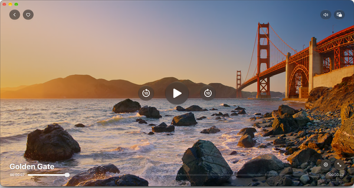
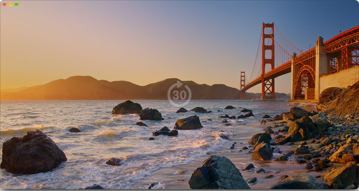
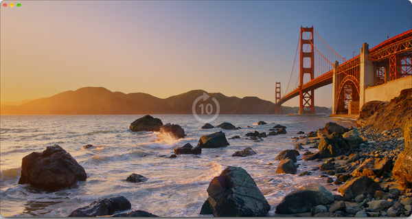
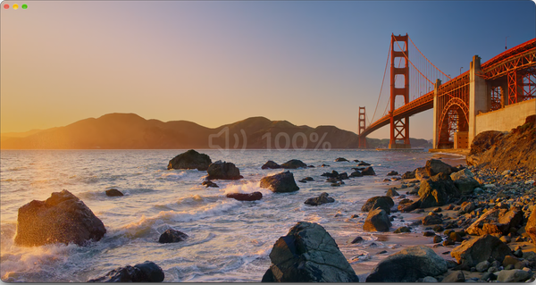
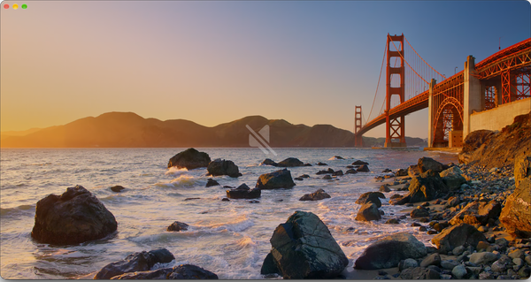
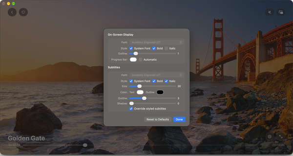

Free · Open source · macOS 13+
Vidp is a native Mac video player built on libmpv. Drag a file in, or open it from Finder. Everything is a keystroke away, and nothing gets between you and the film.
brew tap mdopeace/vidp
brew install --cask vidpInstall details and the no-Homebrew route below.

Recommended — and the update path that just works.
brew tap mdopeace/vidp
brew install --cask vidp
You don't have to upgrade this yourself — Vidp checks for updates on launch, and from the Playback menu. It downloads, verifies and installs in place.
Prefer brew? brew update && brew upgrade vidp does the same thing.
Grab the .app straight from Releases.
↓ Download for macOSvidp.app into Applications
xattr -dr com.apple.quarantine /Applications/vidp.app




mp4, m4v, mov, mkv, webm, avi — anything libmpv can.
Double-click a file, or set Vidp as the default player.
Shift makes it 30. No progress bar hunting.
Float it in a corner and keep watching.
Font, size, colour, outline and shadow, all yours.
Ships its own libmpv and FFmpeg — no brew install mpv.
Checks GitHub, verifies the download, installs in place.
Hands off to the macOS controls, keys and AirPlay.
Full cleanup or app-only, from the app menu.
Yes — MIT licensed, and the source is on GitHub. No account, no trial, no upsell.
No. Every build bundles its own libmpv and FFmpeg, so it runs on a Mac that has never heard of Homebrew.
macOS 13 or newer. Prebuilt releases are Apple Silicon — build from source on Intel.
It isn't notarized, and macOS 15 and later removed right-click →
Open, so the popup only offers Done / Move to Bin. Run
xattr -dr com.apple.quarantine
/Applications/vidp.app
once and it opens.
Space plays and pauses, ← and → skip 10 seconds, ↑ and ↓ set the
volume, f goes full screen, p opens
Picture in Picture, and ⌘, opens Settings.
Nowhere. Resume positions and recent files stay on your Mac, and nothing is uploaded anywhere.